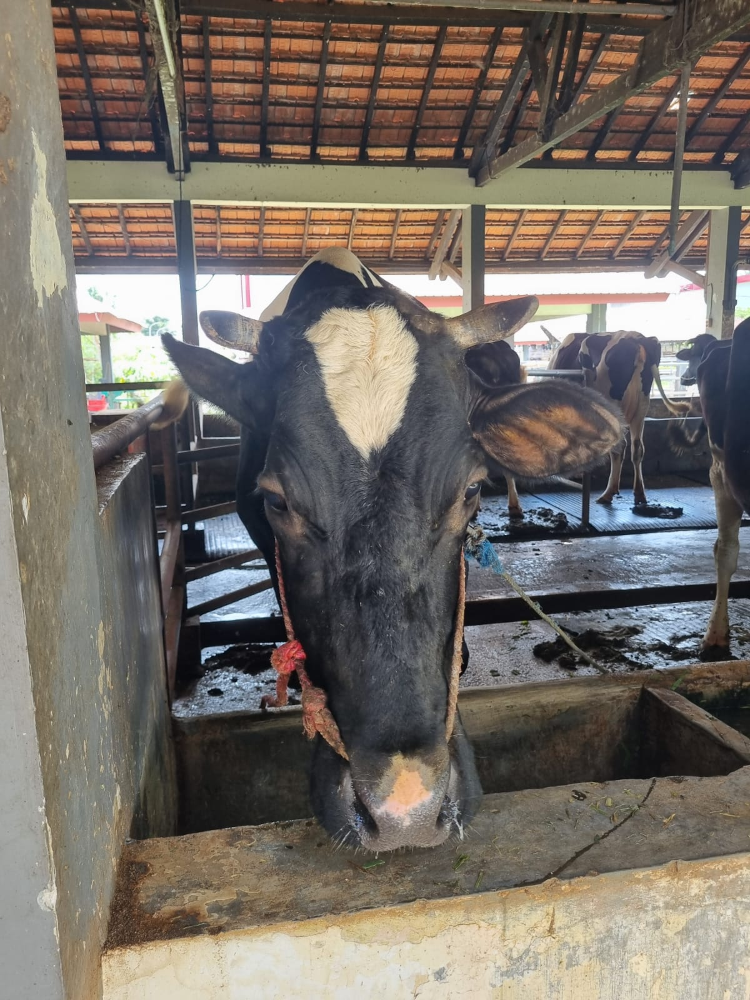
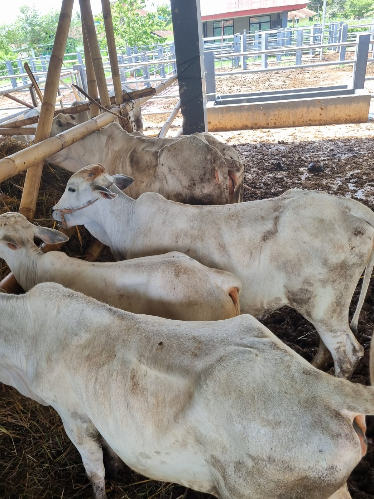
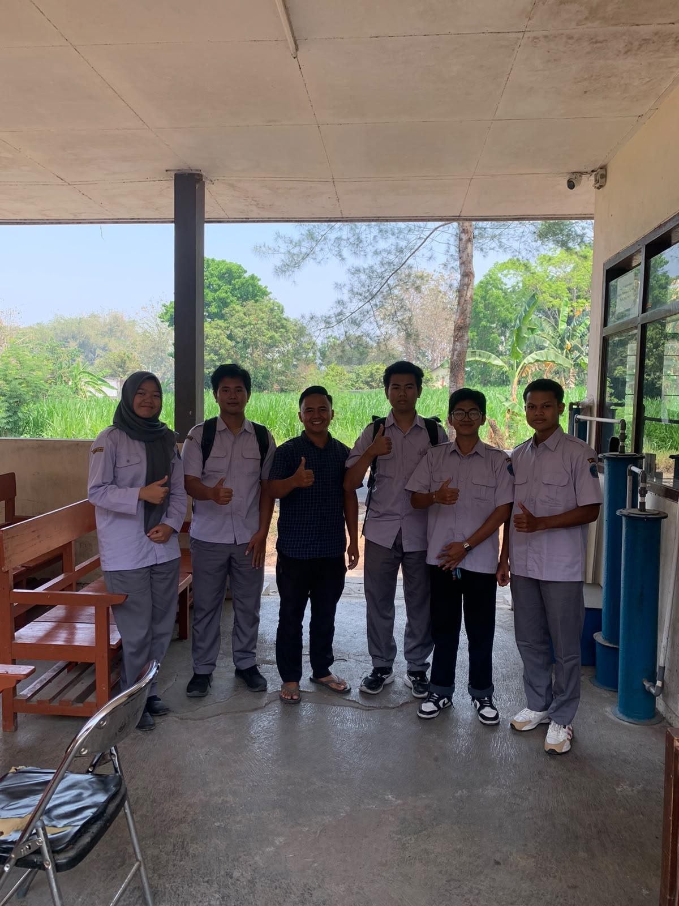
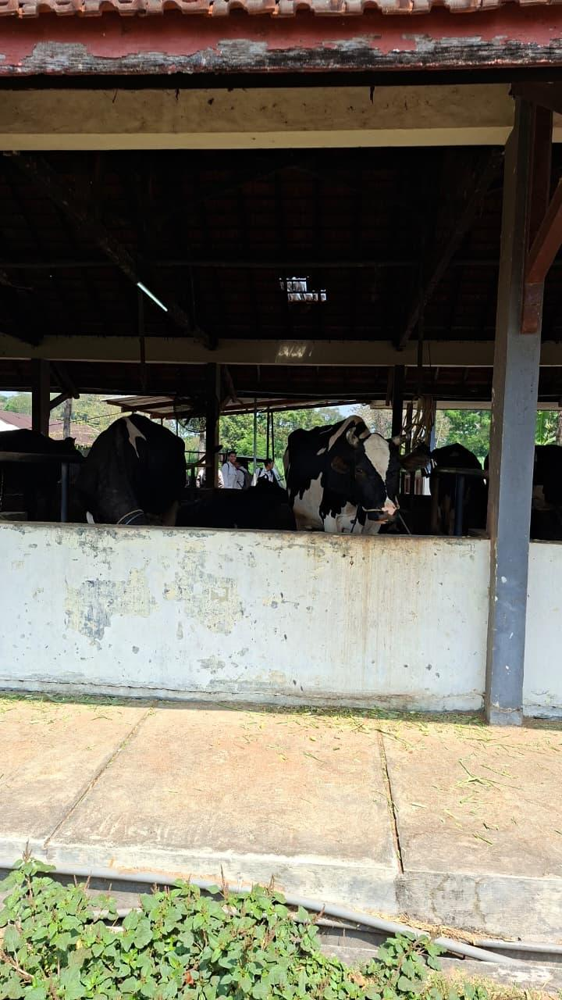
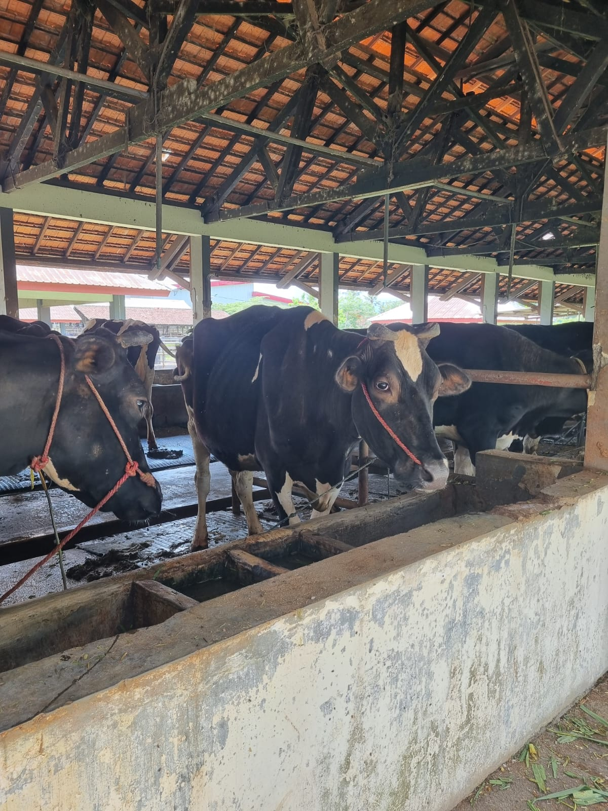

TENTANG KAMI
Informasi TEFA
Tentang TEFA Feedlot dan Sapi Perah
Sejarah & Tujuan Awal:
TEFA Feedlot dan Sapi Perah ini dibangun atas inisiatif Unit Pengelolaan Peternakan Politeknik Negeri Jember. Awalnya hanya ditujukan untuk mendukung kegiatan akademis mahasiswa, yaitu laboratorium hidup bagi mahasiswa untuk belajar dan mengasah keterampilan mereka dalam pengelolaan peternakan serta pemahaman perawatan sapi secara langsung mengintegrasikan konsep Teaching Factory (TEFA) yang menggabungkan fungsi pendidikan dan unit bisnis.
Visi & Misi:
Selain fokus pada produksi dan bisnis, peternakan berpedoman pada sebagai sarana pembelajaran, pemberdayaan pemulihan, dan pengelolaan sumber daya lokal. Hanya mengutamakan keuntungan, tetapi juga menyerta kualitas dan kepedulian terhadap lingkungan melalui budaya pengembangan berkelanjutan.
Teaching Factory (TEFA):
Sebagai TEFA, kami tidak hanya berfungsi untuk unit bisnis, tetapi juga menjadi tempat pembelajaran, penelitian, dan pengembangan masyarakat. Dengan kapasitas kandang 90-40 ekor sapi, kami mengelola laboratorium hidup bagi mahasiswa untuk belajar dan berprestasi langsung di lapangan.





